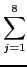
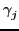
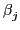
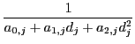
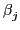
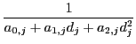
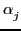
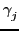

Next: 3-d geometry
Up: Geometry and graphics
Previous: 3-d rendering.
If you enable Lights in the cfg configuration of a 3-d
graph, the scene will be rendered by the OpenGL lighting
algorithm. You can enable 1 to 8 spots of light, each is configurable
(buttons l1 to l8).
Each spot has geometric properties: it may be a positional spot
if w = 1 or a directional spot if w = 0
- A positional spot (w = 1) is
at position x, y, z and has a direction, defined by
x->, y->, z->. Light coming from a positional spot may
be attenuated, the attenuation may depend on the distance between
the spot and the object (with a quadratic formula,
att0, att1, att2 in the spot configuration), and by the
cosine of the angle between the spot direction and the segment
spot-object to an exponent (exp in the spot configuration).
In addition, the spot may light only inside a cone of angle
configurable by the cutoff value (in degrees, use 180
for no cutoff or a value between 0 and 90). An additional attenuation
comes from the cosine of the angle incoming direction-normal to the
object, so that zenithal lighting is maximal.
- A directional spot w = 0 (emulating e.g. Sun light), does not
attenuate (except for the angle between the direction of the
spot and the normal). The direction is defined by x, y, z.
Objects from the scene may
have their own properties with respect to three kinds of light:
- ambient light,
emulating light coming from all directions and diffused
in all directions without attenuation,
- diffuse light,
emulating light coming from one direction and diffused in all directions
with an attenuation factor proportionnal to the cosine of the
angle of the incoming direction and the normal to the object,
- specular light,
emulating light coming from one direction and reflected
preferentially in the direction symmetric with respect to
the normal of the object.
In addition, an object may have intrinsic light, called emission.
Each property must be specified for 4 channels: r (red), b (blue)
and g (green) for the colors, and a (alpha) for transparency (if
you enable Blending).
Object properties must be specified in their definition (on
the commandline):
gl_material=[gl_front,gl_ambient,[r,g,b,a]]
specifies the property for ambient light, use
gl_diffuse, gl_specular or gl_emission
instead of gl_ambient for diffuse, specular or intrinsic
light. Default is 0.2 for ambient, 0.8 for diffuse and 0 for emission
on r,g,b channels and 1 on alpha channels.
gl_material=[gl_front,gl_shininess,n]
specifies the exponent n that will be used for specular light. The
exponent is that of
cos( ), where is the angle
between reflected incoming light and visualization direction (default
is n = 50).
), where is the angle
between reflected incoming light and visualization direction (default
is n = 50).
gl_texture="filename" specify an image filename that
will be mapped on a sphere or a polygon or a parametric
defined surface.
Summing up, the formula for light on each channel is :
| l |
= |
oe + oala, j + osls, jcos()S + |
|
| |
|
+ odld, jcos( )ejcos() )ejcos() |
|
where :
-
oe, oa, od, os are the material properties with respect to
ambiant, diffuse, specular light, S is the
``shininess'' (exponent for specular light)
-
la, j, ld, j, ls, j are the properties of spot j for
ambiant, diffuse and specular light
-
a0, j, a1, j, a2, j are attenuation coefficients
of spot j, replaced by 1,0,0 if w = 0 (no attenuation)
- dj is the distance of spot j to the objet
-  is the angle between the direction of spot j and the
segment from spot j and the object, except if is
greater to the angle of cutoff of spot j (
=
 /2),
or if w = 0 (
= 0, no attenuation for directionnal light).
/2),
or if w = 0 (
= 0, no attenuation for directionnal light).
 is the angle between the segment spot j-object and
the normale to the objet (if w = 0, replace spot j-objet by
the spot direction)
is the angle between the segment spot j-object and
the normale to the objet (if w = 0, replace spot j-objet by
the spot direction)
-  is the angle between the symmetric of the direction
of the spot w.r.t. the normal of the object
and the segment object-eye
Next: 3-d geometry
Up: Geometry and graphics
Previous: 3-d rendering.
giac documentation written by Bernard Parisse